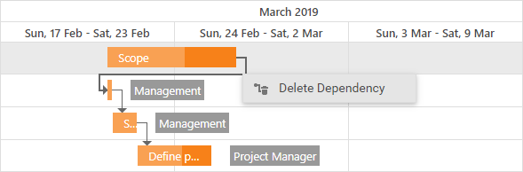

Manage Dependencies
Add a Dependency
A dependency type specifies which edges (right or left - for preceding and succeeding tasks) serve as the start and end points for the dependency.
Hover the mouse pointer over the preceding task's edge (marked with a circle) and drag the connector to the edge of the next task.
The following image demonstrates the "Finish-To-Start" dependency between tasks:

Delete a Dependency
Right-click a dependency and select the "Delete Dependency" context menu item. You can also select a connector and press Delete to delete the dependency between tasks.
